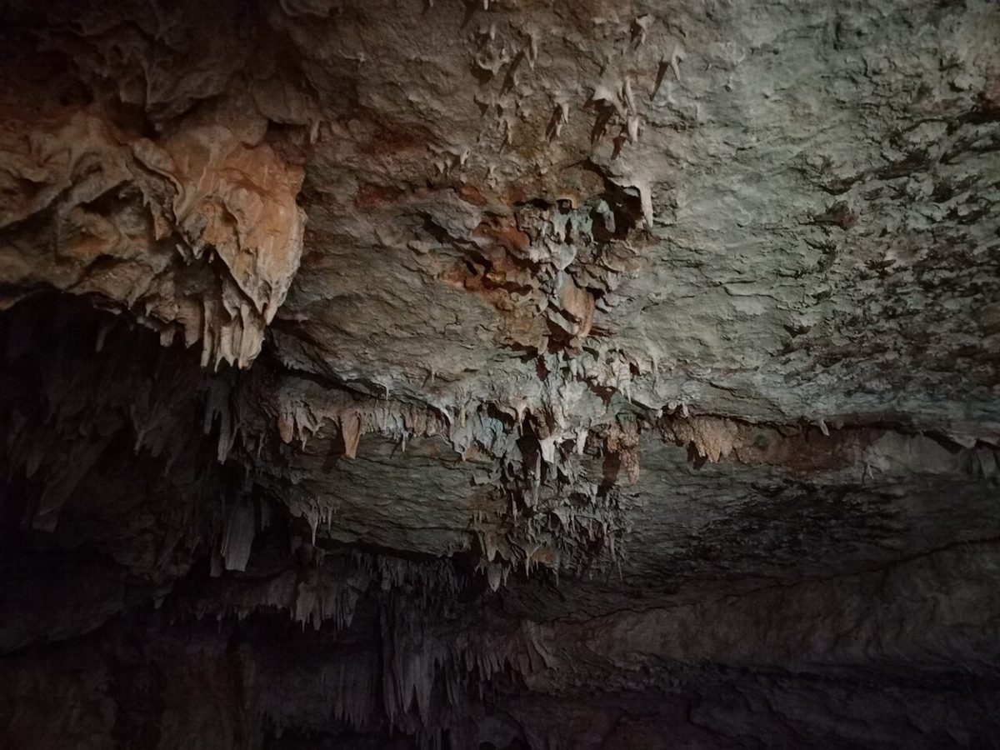
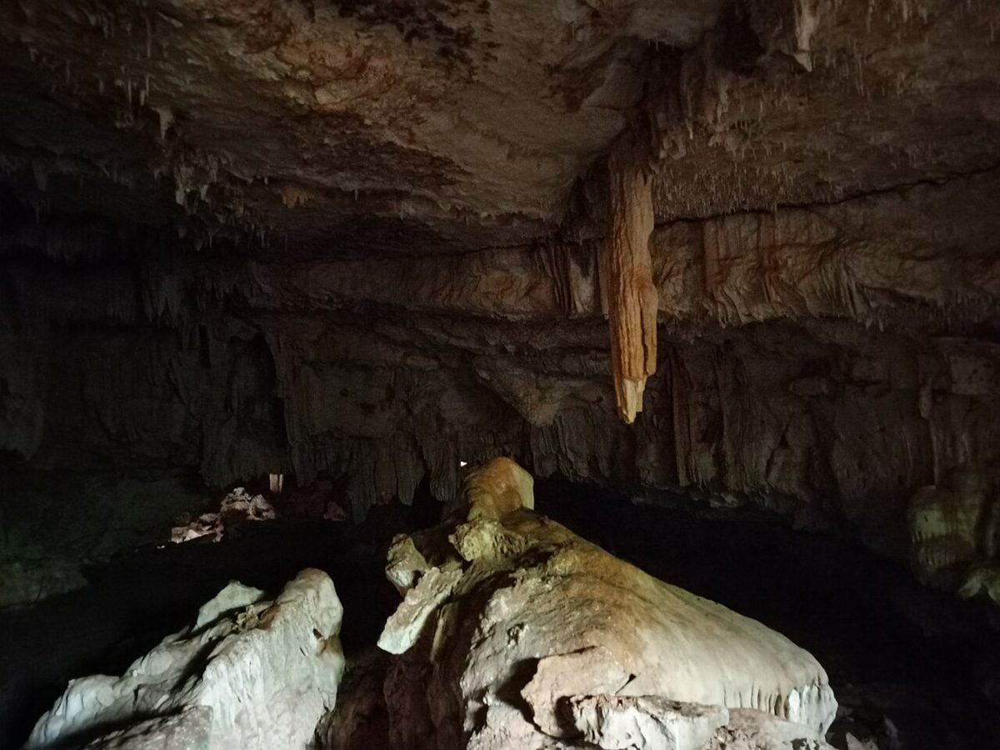
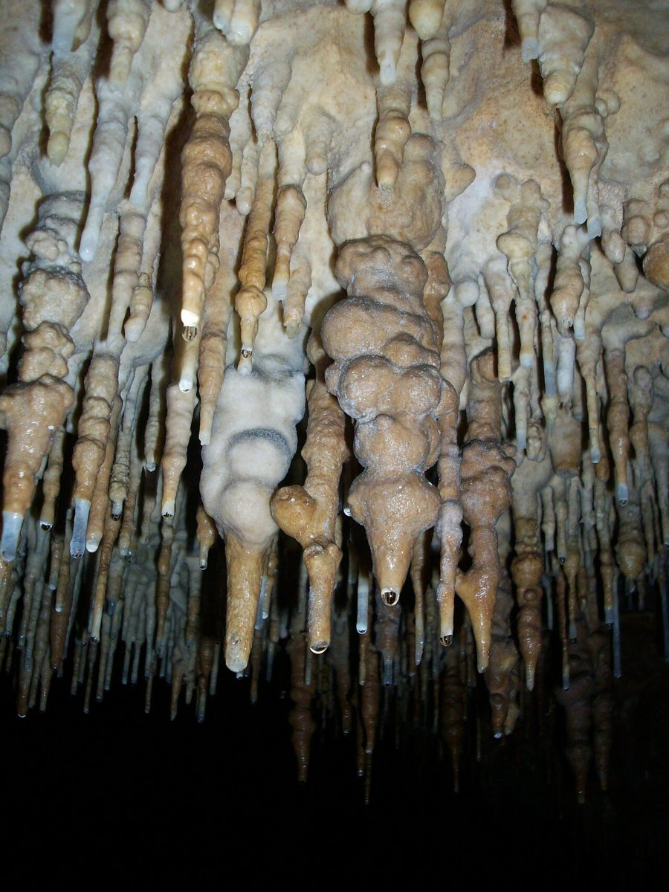

1第一洞 入口
ギャラリー喫茶室蝙蝠
制作側の連想
ヘッドランプの届くところまで
屋号の由来は分かりません。制作側は、店名の文字から、暗がりを少しずつ進む洞の見学を連想しました。そこでこのサイトは、見学順路の案内札のように、ページを「第一洞」から「第五洞」まで順に並べています。写真は、洞の岩肌や小さな明かりをイメージして選んだフリー素材です。制作側の連想で、お店の理念・由来とは無関係です。
明かりの届く範囲(イメージ)
暗がりのスケッチ
写真はお店のものではなく、国外または撮影地不明のフリー素材です。



ご案内
お店のこと(確認できたものだけ)
| 所在地 | 〒840-0831 佐賀県佐賀市松原１丁目１−４６ |
|---|---|
| 電話 | なし |
| 営業時間 | 準備中 |
| 定休日 | 準備中 |
| ご予約 | 準備中 |
| 駐車場 | 準備中 |
| SNS | Instagram @cafe_koumori |